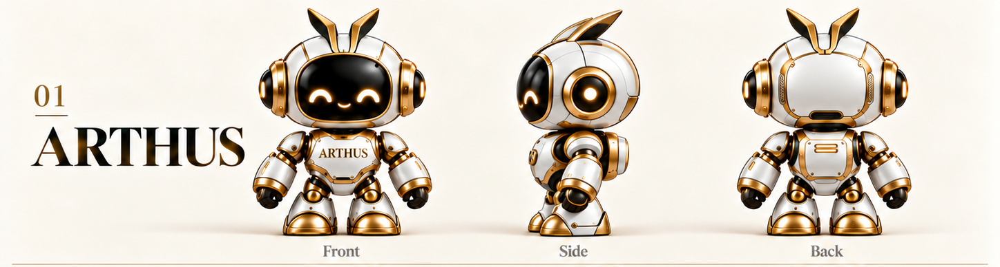

열고, 고치고, 저장하고.
글 문서와 표, 발표 자료를 탭으로 열어보세요. 한글·PDF·마크다운까지 문서 종류에 맞는 편집 도구를 사용할 수 있습니다.
ARTHUS AI OFFICE · AI OFFICE
보고서부터 스프레드시트, 발표 자료까지.
다양한 문서와 AI를 하나의 작업 공간에서 만나세요.
흩어진 아이디어를 모으고,
다음 작업을 이어갈 수 있도록.
이해를 돕기 위한 화면 구성 예시입니다. 실제 앱 화면은 버전에 따라 다를 수 있습니다.
ONE WORKSPACE. MANY POSSIBILITIES.
문서마다 프로그램을 오가는 대신, 탭을 바꿔 작업을 이어가세요. 매뉴얼에 소개된 9가지 편집기를 한눈에 살펴보세요.
글 문서와 표, 발표 자료를 탭으로 열어보세요. 한글·PDF·마크다운까지 문서 종류에 맞는 편집 도구를 사용할 수 있습니다.
문단 다듬기, 표 계산, 발표 자료 구성. 원하는 범위와 결과를 AI에게 설명하고, 바뀐 내용을 확인하세요.
파일을 PC에 저장하고, 문서 내용을 검색하거나 즐겨찾기로 모아보세요. AI 요청 시에는 필요한 내용이 연결한 AI 서비스로 전송됩니다.
MEET ARTHUS
차분한 화이트에 따뜻한 골드 한 줄.
ARTHUS와 함께하는 AI OFFICE를 소개합니다.

WORK WITH AI
“이 문단을 더 읽기 쉽게.”
“이 자료로 발표 목차를 만들어 줘.”
평소 쓰는 말로 요청하고, 결과를 확인하며 완성하세요.
Claude·ChatGPT 등 AI 연결 방식은 매뉴얼을 참고하세요. 서비스별 구독, API 비용과 사용 한도는 별도로 적용될 수 있습니다.
GET STARTED
ARTHUS에 로그인하세요. 프로그램 다운로드는 PREMIUM MEMBER와 ADMIN에게 제공됩니다.
설치파일 등록 후 운영체제에 맞는 배포본을 받으세요. Windows 10/11 64비트와 Mac용 1.0.0 배포본을 제공합니다. Mac은 macOS 12 이상 베타 버전입니다.
설치 후 파일을 열어 편집하세요. AI 기능을 사용하려면 앱 설정에서 지원하는 AI 서비스를 연결하세요.
NARAE OFFICE 1.0.0을 만나보세요.
소개는 누구나, 홈페이지 다운로드는 PREMIUM·ADMIN 회원에게.
Windows 10/11 · 64비트 · 약 193 MB
Mac 베타 · macOS 12 이상 · Apple Silicon 약 239 MB / Intel 약 245 MB
회원 권한을 확인하고 있습니다…
자료실로 돌아가기 ↗현재 결제 기능은 연결되어 있지 않습니다. PREMIUM 등급은 관리자가 부여합니다. 설치파일은 GitHub 공개 릴리스에서 제공됩니다. 홈페이지의 다운로드 버튼만 회원 등급에 따라 제한됩니다.
A FEW THINGS TO KNOW
첨부 매뉴얼에서는 문서 열기·편집·저장 등 기본 작업을 AI 연결 없이 사용할 수 있다고 안내합니다. 실제 제공 범위는 배포본을 기준으로 확인해주세요.
매뉴얼은 여러 문서 형식의 열기와 저장을 안내하지만, 모든 기능과 복잡한 서식이 동일하게 유지된다는 뜻은 아닙니다. 중요한 문서는 원래 프로그램에서도 확인하고 원본을 보관해주세요.
문서는 PC에 저장됩니다. AI에게 작업을 요청할 때는 내용이 연결한 AI 제공업체로 전송될 수 있습니다. 민감한 정보가 포함된 문서는 전송 전에 확인하세요.
네. 소개는 열람할 수 있습니다. 홈페이지 설치파일 다운로드 버튼은 PREMIUM MEMBER와 ADMIN에게 제공하며, 다운로드 요청 시 서버에서 현재 회원 권한을 확인합니다.